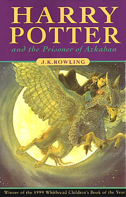

Ordem cronologica dos livros
Harry Potter e a Pedra Filosofal
Harry Potter e a Pedra Filosofal (no original, em inglês: Harry Potter and the Philosopher's Stone) é o primeiro dos sete livros da série de fantasia Harry Potter, escrita por J. K. Rowling. O livro conta a história de Harry Potter, um órfão criado pelos tios que descobre, em seu décimo primeiro aniversário, que é um bruxo. No romance, são narrados seus primeiros passos na comunidade bruxa, sua entrada na Escola de Magia e Bruxaria de Hogwarts e o início de sua amizade com Ron Weasley e Hermione Granger, os quais o ajudam a enfrentar Lord Voldemort — Lorde das Trevas e assassino dos pais de Harry, que agora procura um objeto lendário conhecido como a pedra filosofal.
Após ter sido rejeitado por diversas editoras, o livro foi publicado no Reino Unido pela editora londrina Bloomsbury em 26 de junho 1997. No Brasil, a editora Rocco comprou-lhe os direitos em 1999, tendo sido publicado em 1.º de janeiro do ano seguinte; em Portugal, entrou em circulação no dia 14 de outubro de 1999 por intermédio da editora Presença. A obra ganhou a maioria das premiações britânicas julgadas por crianças e outros prêmios nos Estados Unidos e alcançou o topo da lista de ficções mais vendidas do The New York Times em agosto de 1999, na qual permaneceu perto da posição durante grande parte de 1999 e 2000. O livro foi traduzido para mais de sessenta línguas diferentes.
Comentários sobre a imaginação, o humor e o estilo literário de Rowling marcaram as críticas favoráveis, embora alguns tenham se queixado que os capítulos finais estejam apressados. A escrita da autora foi comparada com a de Jane Austen, uma de suas escritoras favoritas, Roald Dahl, cujas obras prevaleciam sobre o mundo de histórias infantis até a chegada de Harry Potter, e ao poeta Homero da Grécia Antiga. Enquanto alguns comentaristas diziam que o livro se espelhava a internatos das épocas Vitoriana e Eduardiana, outros achavam que a trama estava firmemente aplicada no mundo moderno por conter problemas ético sociais contemporâneos. Junto com os outros títulos da série, o livro foi criticado por grupos religiosos, levando a sua proibição em alguns países devido a acusações de promoção à bruxaria. No entanto, determinados críticos cristãos defendem-no, alegando que ele exemplifica importantes conceitos valorizados pela doutrina cristã, como o autossacrifício.
 Baixar livro
Baixar livro
Harry Potter e a camera secreta
Harry Potter and the Chamber of Secrets (Brasil: Harry Potter e a Câmara Secreta / Portugal: Harry Potter e a Câmara dos Segredos) é um romance de fantasia escrito pela britânica J. K. Rowling. É o segundo livro da série Harry Potter. O livro se envolve em torno da lenda de uma câmara secreta localizada na Escola de Magia e Bruxaria de Hogwarts, na qual abriga um monstro que matará a todos os bruxos que não provém de famílias mágicas. Diversos alunos aparecem petrificados e Harry Potter, além de ser apontado como o maior suspeito, tenta desvendar e resolver o mistério junto de seus melhores amigos, Rony Weasley e Hermione Granger.
Após o grande sucesso do primeiro livro da série, a escritora aponta que apresentou grandes dificuldades em desenvolver Câmara Secreta por medo de desapontar o público, entretanto, também o considera como um de seus preferidos. Metade do livro já havia sido escrita quando o livro antecessor fora publicado. Rowling afirma que a trama da obra é mais direta em comparação à Harry Potter e a Pedra Filosofal. O livro passou por diversas mudanças e revisões até chegar no resultado final.
Após o grande sucesso do primeiro livro da série, a escritora aponta que apresentou grandes dificuldades em desenvolver Câmara Secreta por medo de desapontar o público, entretanto, também o considera como um de seus preferidos. Metade do livro já havia sido escrita quando o livro antecessor fora publicado. Rowling afirma que a trama da obra é mais direta em comparação à Harry Potter e a Pedra Filosofal. O livro passou por diversas mudanças e revisões até chegar no resultado final.
 Baixar livro
Baixar livro
Harry Potter e o Prisioneiro de Azkaban
Harry Potter e o Prisioneiro de Azkaban (no original em inglês Harry Potter and the Prisoner of Azkaban) é o terceiro livro dos sete volumes da série de fantasia Harry Potter, tanto em termos cronológicos como em ordem de publicação, da autora inglesa J. K. Rowling. Foi primeiramente publicado no Reino Unido pela editora londrina Bloomsbury em 1999.
O livro conta sobre o terceiro ano de Harry Potter na Escola de Magia e Bruxaria de Hogwarts. Sem a aparição de Voldemort, a trama apresenta um novo perigo para o personagem principal: Sirius Black, que teria assassinado treze pessoas com um único feitiço, fugiu da prisão de Azkaban e estaria agora o perseguindo para matá-lo. O garoto, junto com seus dois amigos, Rony e Hermione, começam a investigar o suposto assassino e acabam descobrindo muitos segredos que envolvem sua já falecida família.
O livro foi primeiramente publicado no Reino Unido no dia 8 de julho de 1999 pela editora Bloomsbury e nos Estados Unidos no dia 8 de setembro de 1999 pela editora Scholastic. No Brasil, a editora Rocco lançou o livro no primeiro dia de dezembro do ano de 2000 e em Portugal no dia 31 de março de 2000 pela editora Presença. Segundo Rowling, esse foi um dos livros mais fáceis de escrever, levando apenas um ano para ser finalizado. O romance vendeu mais de 68 mil cópias em seus primeiros três dias de lançamento no Reino Unido, e desde então contém mais de três milhões de cópias vendidas no país. O livro venceu o Whitbread de melhor livro infantil de 1999, o Bram Stoker Awards, o Locus de Melhor Romance de Fantasia, e foi indicado para muitos outros prêmios, incluindo o Hugo. Alguns consideraram o livro como "mais obscuro" do que os anteriores e notaram uma mudança na escrita de Rowling, dizendo que os personagens foram mais bem desenvolvidos e interessantes. Assim como os outros romances da série, Harry Potter e o Prisioneiro de Azkaban desencadeou alguns debates religiosos.
 Baixar livroHarry Potter e o Cálice de Fogo
Harry Potter e o Cálice de Fogo (no original em inglês Harry Potter and the Goblet of Fire) é o quarto livro dos sete volumes da série de fantasia Harry Potter, tanto em termos cronológicos como em ordem de publicação, da autora inglesa J. K. Rowling. Foi primeiramente publicado no Reino Unido e nos Estados Unidos em 2000. O livro segue o quarto ano de Harry Potter na Escola de Magia e Bruxaria de Hogwarts. Neste ano, a Copa Anual de Quadribol entre as casas é substituída pelo Torneio Tribuxo, uma competição amistosa entre as três maiores escolas europeias de bruxaria — Hogwarts, Beauxbatons e Durmstrang — que não se realizava havia um século. Somente alunos maiores de dezessete anos podem se inscrever no Torneio, porém, misteriosamente, Harry é escolhido pelo Cálice de Fogo e forçado a competir.
O livro foi primeiramente publicado no Reino Unido e nos Estados Unidos no dia 8 de julho de 2000 pela editora Bloomsbury e Scholastic, respectivamente. No Brasil, a editora Rocco lançou o livro em junho de 2001, e em Portugal um mês depois da estreia oficial pela editora Presença. Segundo Rowling, esse era o livro mais difícil que já havia escrito até o momento. O romance se tornou, na época, o livro mais vendido da história, com uma estimativa em 3 milhões de cópias vendidas em suas primeiras 48 horas, e desde então contém mais de 55 milhões de cópias vendidas. O livro venceu o Prêmio Hugo de Melhor Romance, Indian Paintbrush Book Award, entre muitos outros. Assim como os outros romances da série, Harry Potter e o Cálice de Fogo desencadeou alguns debates religiosos.
 Baixar livro
Baixar livro
Harry Potter e a ordem da fenix
Harry Potter and the Order of the Phoenix (Brasil: Harry Potter e a Ordem da Fênix / Portugal: Harry Potter e a Ordem da Fénix) é o quinto livro dos sete volumes da série de fantasia Harry Potter, tanto em termos cronológicos como em ordem de publicação, da autora inglesa J. K. Rowling. O livro narra as lutas de Harry e seus colegas durante o quinto ano na Escola de Magia e Bruxaria de Hogwarts, que incluem a aparição sub-reptícia do antagonista Lorde Voldemort e a preparação para os NOMs (acrônimo para Níveis Ordinários em Magia, são testes realizados por alunos do quinto ano). Após Harry presenciar o ressurgimento de Voldemort e lutar com ele no ano anterior, o Ministério da Magia e o Profeta Diário iniciam durante as férias de verão uma campanha para desacreditar Harry e Dumbledore perante a comunidade mágica sobre o retorno do bruxo das trevas.
O livro foi primeiramente publicado no Reino Unido e nos Estados Unidos em junho de 2003, pelas editoras Bloomsbury e Scholastic, respectivamente. Em Portugal, a editora Presença foi responsável pelo lançamento do livro em outubro de 2003. No Brasil, o livro foi lançado pela editora Rocco em novembro do mesmo ano. Segundo a autora, o livro é "muito mais obscuro" do que os anteriores. O romance, que é o maior livro da série, se tornou na época o livro mais vendido da história com mais de cinco milhões de cópias vendidas nas primeiras 24 horas do lançamento e desde então já vendeu mais de 55 milhões de cópias. O volume ganhou diversos prêmios, dentre eles o British Book Awards.
 Baixar livro
Baixar livro
Harry Potter e o principe meio sangue
Harry Potter and the Half-Blood Prince (Brasil: Harry Potter e o Enigma do Príncipe / Portugal: Harry Potter e o Príncipe Misterioso) é um romance de fantasia escrito pela britânica J. K. Rowling, sendo o sexto dos sete volumes da série Harry Potter. Retomando os passos de Harry no mundo bruxo, o jovem, agora em seu sexto ano na Escola de Magia e Bruxaria de Hogwarts, prepara-se para a batalha final contra Voldemort, cujo poder aumenta ininterruptamente. Em sessões privadas com o diretor Alvo Dumbledore, Harry vasculha o passado de Voldemort para obter respostas em como destruí-lo.
O livro foi publicado no Reino Unido pela editora Bloomsbury e em outro países anglófonos a 16 de julho de 2005, contando com uma impressão inicial de 10,8 milhões de cópias. Em contrapartida, a Editorial Presença publicou-o em Portugal, a 15 de outubro, e a editora Rocco no Brasil, em 26 de novembro do mesmo ano, em ambos os casos adotando títulos que não seguiram a tradução literal do original: Harry Potter e o Príncipe Misterioso, em Portugal, Harry Potter e o Enigma do Príncipe, no Brasil.
Baixar livroHarry Potter e as reliquias da morte
Harry Potter and the Deathly Hallows (Brasil: Harry Potter e as Relíquias da Morte / Portugal: Harry Potter e os Talismãs da Morte) é um romance de fantasia escrito pela britânica J. K. Rowling. É o sétimo e último livro da série Harry Potter. Após se encarregarem da tarefa do falecido diretor da Escola de Magia e Bruxaria de Hogwarts, Alvo Dumbledore em encontrar e destruir todas as Horcruxes criadas pelo maior bruxo das trevas Voldemort, o livro narra a jornada do personagem principal, o jovem Harry, e seus melhores amigos Rony e Hermione, que abandonaram seu último ano letivo na escola de feitiçaria para cumprirem tal dever. Ao passo que o confronto final entre Harry e Voldemort se aproxima, a batalha entre os Comensais da Morte (seguidores de Voldemort) e o resto do mundo bruxo acontece. Foi lançado em 21 de julho de 2007 no Reino Unido e em outros países anglófonos e somente em 8 de novembro do mesmo ano no Brasil e 16 de novembro Portugal.
O primeiro contato que a escritora teve com o processo de escrita do livro foi no ano de 1990, quando escreveu um rascunho do último capítulo do livro, o qual foi reescrito diversas vezes. Por conta de sua filha, Rowling encontrou dificuldades em escrever e dedicou a maior parte do ano de 2005 na a criação da bebê, retomando determinadamente a compor por longos períodos no final do mesmo ano. Relíquias da Morte foi o romance da série que mais proporcionou diversão e sentimentos como tristeza e euforia à autora. Diversos rumores sobre o título do livro surgiram, porém foram descartados por Rowling, que mais tarde se declarou dividida entre três novos títulos. Ao terminar o livro num hotel em Edimburgo, a mesma registrou dizeres num busto de Hermes em seu quarto contendo informações como o dia e o local da finalização da obra.
Um dos livros mais aguardados de 2007, Relíquias da Morte foi aclamado por críticos literários e escritores, com elogios direcionados a prosa, imaginação, humor e a evolução literária pessoal da escritora e da própria história da série, embora alguns comentários digam que certos capítulos são muito longos, deixando personagens e situações cansativas. Rowling foi comparada a autores como Charles Dickens, Ian Fleming, Mark Twain e Lewis Carroll. Consequentemente, foi incluído em algumas listas reunindo os melhores de 2007, sendo listado entre os cem melhores pela The New York Times e entre os melhores livros infantis e melhores para jovens adultos pela American Library Association. O livro quebrou recordes de vendas e pré-vendas mundiais, registrando 8,3 milhões de cópias vendidas nos Estados Unidos e 2,65 milhões no Reino Unidos nas primeiras vinte e quatro horas, tornando-se o livro mais vendido em um dia. Após o lançamento do último livro, as ações da editora Bloomsbury despencaram, visto que o futuro econômico da mesma era incerto após o término da série.
 Baixar livro
Baixar livro